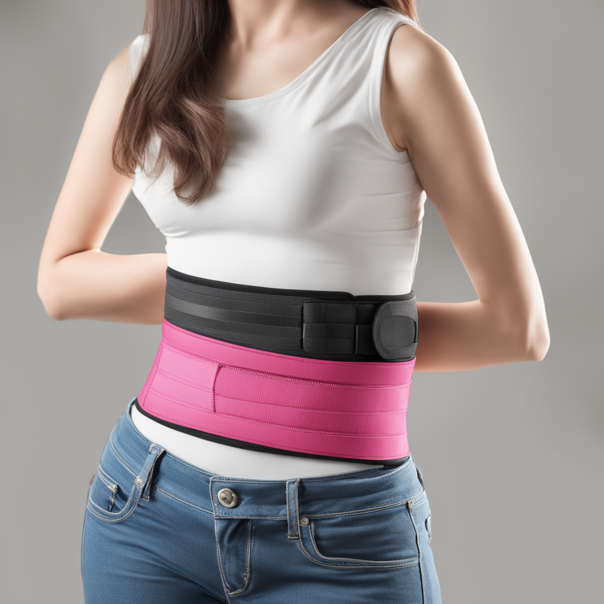
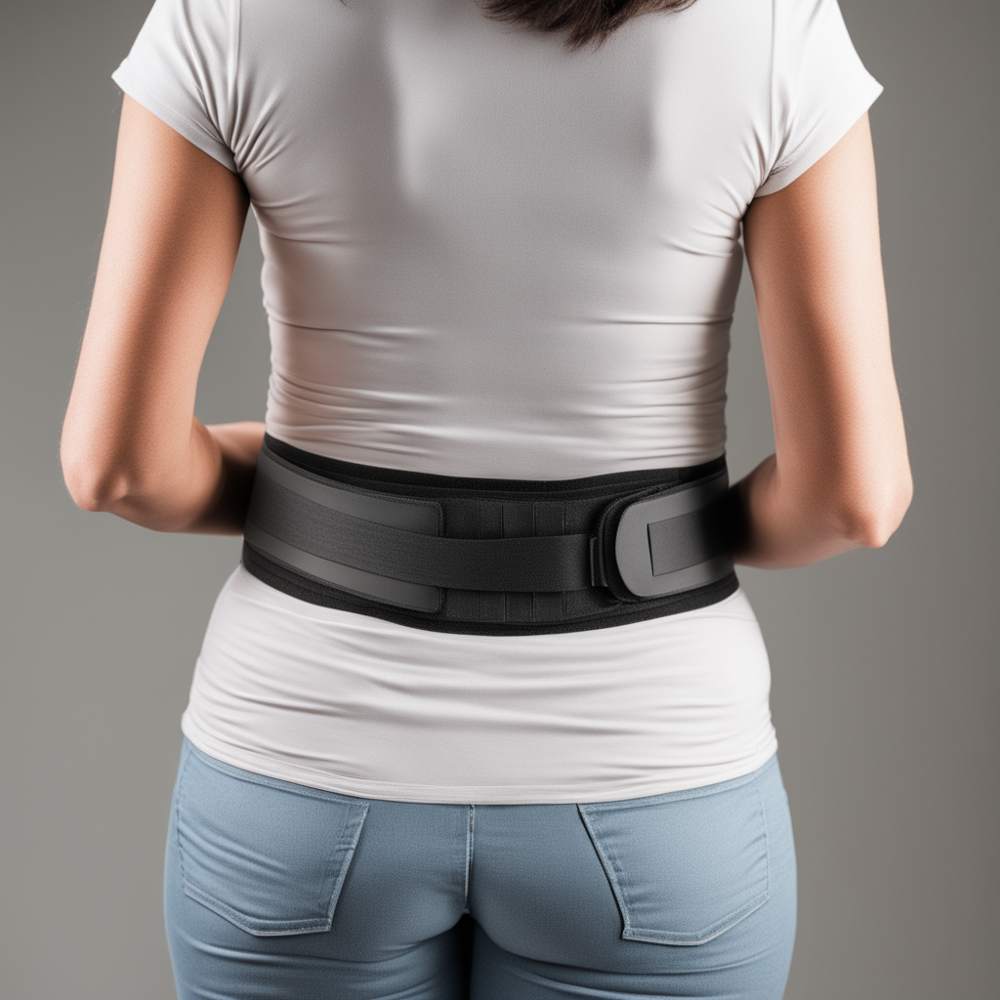

1.Surgical Instruments: We offer a comprehensive range of precision-crafted surgical instruments, including forceps, scissors, needle holders, retractors, and more. These instruments are made from durable materials and designed for optimal performance in surgical procedures.
2.Medical Devices: A R Surgical provides a selection of medical devices, such as catheters, syringes, and stethoscopes, designed to aid in diagnosis, treatment, and patient monitoring.
3.Operating Room Equipment: Our catalog includes essential operating room equipment like surgical lights, tables, and scissors, ensuring a sterile and efficient surgical environment.
4.Sterilization Equipment: We supply autoclaves and sterilization accessories to maintain the highest standards of cleanliness and infection control in medical settings.
5.Patient Care Products: A R Surgical offers a range of patient care products, including hospital beds, bedside tables, and mobility aids, to ensure patient comfort and safety.
6.Wound Care Supplies: Our wound care products include dressings, bandages, and wound closure materials to facilitate wound healing and prevent infections.
7.Disposable Medical Supplies: We provide a variety of disposable medical supplies, such as gloves, gowns, masks, and drapes, to maintain a sterile environment and protect healthcare professionals and patients.
Abdominal Belt:
 